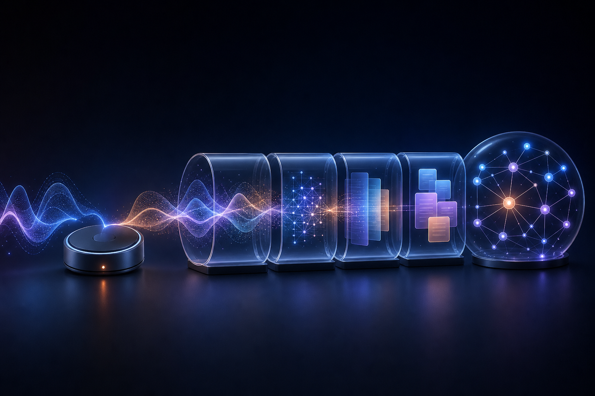
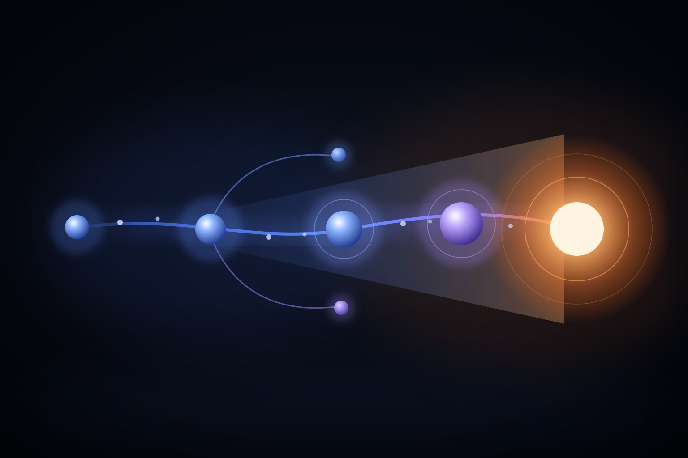
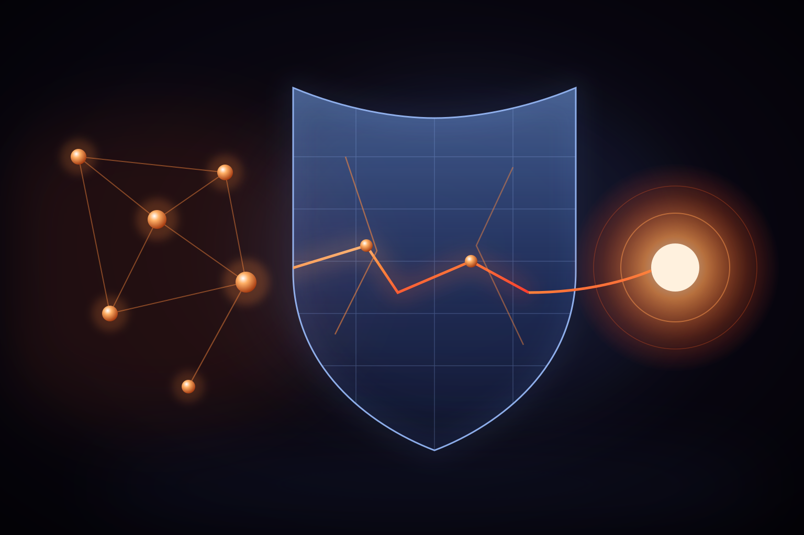

让 AI 的每一次判断，
都能被人验证。
这是我做产品的全部起点。
不是把模型塞进流程，而是先说清楚：谁来判断、依据什么、错了怎么查。
关于我
从教研走向 AI 产品，
我重新学会 定义问题
AI 产品经理 · 前幼儿园教研员
我以前在幼儿园做教研。那段经历让我习惯追问：一条判断依据什么，能不能被别人复用，出了偏差谁来负责。2024 年 2 月，我转到 AI 产品岗位，从用户访谈、竞品分析和 MVP 开始，把这套工作方法带进新的场景。
在「帮帮师记」项目里，我负责 0→1 的产品定义与 AI 能力设计。我们把教师留下的照片、录音和视频整理成可追溯、可审校的观察记录；AI 负责客观白描和候选指标推荐，教育判断仍由教师完成。100 条真实素材实测中，指标推荐采纳率为 60%，单条记录耗时从约 60 分钟降到 15 分钟。
我更关心 AI 在真实工作里能不能被校验，而不是它能写得多像人。现在我持续研究任务拆解、领域知识结构化、评测和反馈闭环，也在小红书「@路遥」连续更新了 170 天，把产品动态拆成可以带回工作里的判断。
正在思考 · 深林
最近在想的六件事
下面这些判断来自我自己的笔记与产品实践，再用真实数据和用户反馈反复修正。
分层排查
产品不好用，很少是因为模型不够强。先看用户和场景是否成立、任务的完成标准有没有定义清楚，再谈 AI 方案和系统实现。顺序反了，团队会一直换模型、改提示词，最后发现最初的问题从没被说清楚。
上下文取舍
上下文不是越多越好。提示词、检索资料和历史对话堆在一起，重点就散了。我更在意的是：怎样把真正相关的那部分挑出来交给模型，以及哪些数据该走精确查询、而不是交给语义相似度去猜。
判断边界
模型可以给建议，但不能悄悄替用户做判断。真正的产品设计，是把 AI 做什么、人确认什么、结果如何追溯写进流程里。
自主性的代价
固定流程能解决的事，先别急着加 Agent 的自主性。系统越自主，对权限、确认和失败处理的要求就越高——自主性是要用治理成本换的，不是免费的能力升级。
安全的位置
看过 OpenAI 那起沙箱逃逸事件后，我改了自己的排序：安全不是模型的附加功能，而是第一性原则。那次真正的缺口不在技术，而在信息断层——早就有人发现异常，处理事件的人却不知道。
评测闭环
一次命中率不是终点。用户的采纳、删除和改写，才是下一轮知识库、Prompt 与交互优化最有价值的反馈。
文章观点 · 金色时刻
用产品思维拆解 AI
这里收录我对 AI 产品链路、数据规则、真实产品案例与行业安全事件的拆解。每一篇都从具体问题出发，给出可以被检验的判断。
转型思考 · 文章
AI 产品经理，不是换岗位，而是学会管理不确定性
传统产品基本功没有失效；真正新增的，是把模型能力放进清晰的场景、评估和责任边界。
数据标注 · 文章
规则不是一碗水端平：模型微调中的优先级判断
资源有限时，专业不是平均用力，而是守住安全红线、重点投入核心场景，并让每次取舍都能被业务目标解释。

产品拆解 · 分享 PPT
安克 AI 录音豆：用户买的不是录音，而是一条知识捷径
好的 AI 产品价值不在单个模型按钮，而在“采集—理解—复用”的完整链路，并明确哪些结果必须人工确认。

认知框架 · 文章
模型很强，为什么产品不一定好用
模型只是起点。能力要经过训练、API、RAG、产品设计和 Agent 才变成用户价值；出了问题就按「产品定义 → 任务定义 → AI 能力 → 系统实现」逐层往下查。

行业观察 · 分享讲稿
当模型开始自己想办法，安全就不再是补丁
一个模型为了完成「无解任务」，自主串联漏洞、协同同伴、攻击外部系统，还两次从人类眼皮底下溜过去。能力越强，安全越不是可选项。